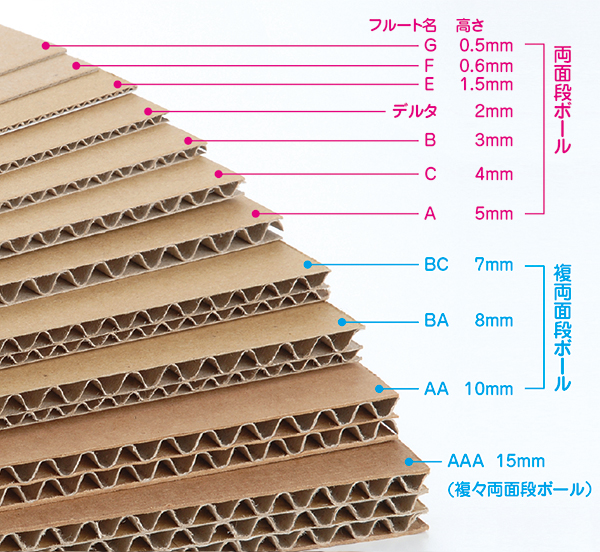

一般的には折り紙専用の正方形の紙を使う。しかし、作品によっては長方形（主に辺の比が1:√2のもの）その他の形をした紙を使う場合もある。 通常は他の用途向けの紙で折られることもある。箸袋（シャツ・鳥・花などに仕上げる）[3]のほか、新聞紙などを用いる作品（帽子、ミット、紙鉄砲など）もある。 紙幣を折り紙の素材とし、人物などの図柄を完成作品のデザインの一部に取り込むような試みさえある。 五角形や六角形や八角形など多角形の特殊な紙を用いる作品もあるが、こうした場合は自分で必要に応じ正方形の紙から切り出すとよい。
文房具店などで最も普通に売られている折り紙は15cm角であるが、それ以下・それ以上の折り紙（5cm角、7.5cm角、24cm角、35cm角等）も市販されている。また、稀ではあるが円形の折り紙なども存在する。 彩色に関しても、両面カラーのもの、透明なもの、グラデーションや水玉など特殊な模様の入ったもの、表面が2等分や4等分に色分けされているものなどがあり、現在1000種以上の折り紙用紙が入手可能といわれている。
複雑な作品を折る場合には、金属箔を利用したホイル紙や、薄い和紙（破れにくい）の裏に金属箔（例えば形が崩れにくくなるアルミ箔）を裏打ちした自作の用紙が用いられることが多い。
展示用の作品には、見栄えの関係で選定した洋紙や和紙を正方形（あるいは作品に応じた形）に裁断して使うことが多い。 厚手の紙（洋紙など）を随時、適度に湿らせてから折る「ウェットフォールディング」という技法も使われる。 この技法を用いると、厚い紙を簡単に折ったり、皺を大幅に減らしたりすることができる。また、曲がった形を固定したり、紙を"伸ばして"（歪ませて）折ったりすることもできる。
手元に正方形の紙がなくとも、例えば目の前にある不要な書類などを工夫して正方形に整えれば、予め用紙を用意してなくとも折り紙を十分に楽しむことが出来る。
折りやすく、折りジワが出来にくく、折りが戻りにくい紙が望ましい。コピー用紙からカレンダーの紙なども含めて幅広く利用可能である。マーメイド紙、ミタント紙などが多用される。 和紙はしなやかな分、折りが戻りやすく使用に当たっては工夫が必要である。作家によっては金色のペンキなどをスプレーして特製の紙を作って使っている。 紙の代わりに革や薄い金属板（銅板や真鍮板等）、木の葉等を使った作品もあり、紙状のものであれば大概応用が可能である。
何よりも手に合っていることが重要であり、次に切れること、先が効く(ハサミの先端部でも切れる)ことが有用である。
ハサミだけでは表現しきれない分野をカバーする意味で重要である。紙用ニス・接着剤は制作の場以外でも、作品の移送・展示・保存のために重要である。 その他の材料・道具についても表現力の向上につながるのであれば積極的に使用すべきであろう。
実は、ペーパーモデルのため特別な用紙はありません。 何でも種類の用紙を使用できますが、用紙の種類ごとに独自のプラスとマイナスがあります。 あなたがペーパークラフトを作るつもりときに、モデルのサイズを知っているはずです、大きいサイズは小さいサイズより厚い用紙を必要とします。 また、家庭用プリンター（インクジェット・プリンター）で印刷できる用紙もありますが、そうでない用紙もあります。レーザー、オフセット印刷、またはデジタル印刷で印刷する必要があります。 以下は、用紙の種類と重量に関するリストです。名前は、お住まいの国で使用できる用紙によって違って場合があります。
ペーパークラフトの標準サイズはA4とレターです。
すべての段ボールには、段ボールは平らな紙（ライナー）と波状の紙（メディアム）が接着剤で貼合されて1つの構造体となっているものの呼称である。
段ボールは使用目的に応じてさまざまな高さがあります。また、ライナを1枚だけ貼り合わせた「片面段ボール」から両側を貼り合わせたもっとも一般的な「両面段ボール」、 そしてより強度を高めた2層の「複両面段ボール」や3層の「複々両面段ボール」など、用途に応じて使い分けられています。
ハサミだけでは表現しきれない分野をカバーする意味で重要である。紙用ニス・接着剤は制作の場以外でも、作品の移送・展示・保存のために重要である。 その他の材料・道具についても表現力の向上につながるのであれば積極的に使用すべきであろう。